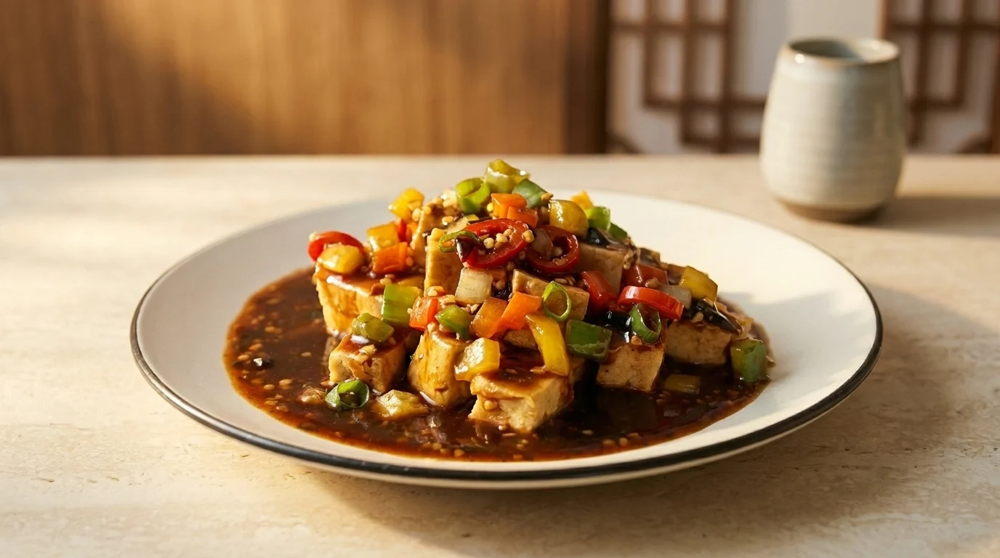
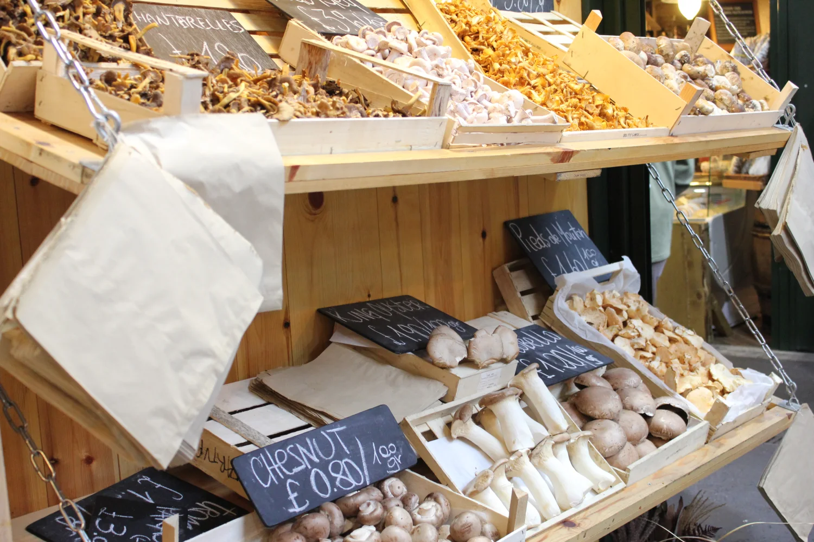

Vegan at Anise
A tradition of flavour.
Inspired by a rich heritage of Chinese vegan cooking, made with fresh ingredients and natural flavours.
Discover our approach
Rooted in tradition
Plant-based, full of life.
Chinese vegan cooking has a rich history in Buddhist and Taoist traditions. At Anise, we draw on that heritage to bring colour, fragrance and flavour to the table.
Explore the vegan menu
The Anise approach
Fresh ingredients. Natural flavours.
We recreate these dishes with care, using fresh ingredients and natural flavours, without MSG, food colourings or canned vegetables.
Discover our philosophySomething for everyone
Made to share.
Made to savour.
Explore our vegan menu and find something delicious to enjoy at home.